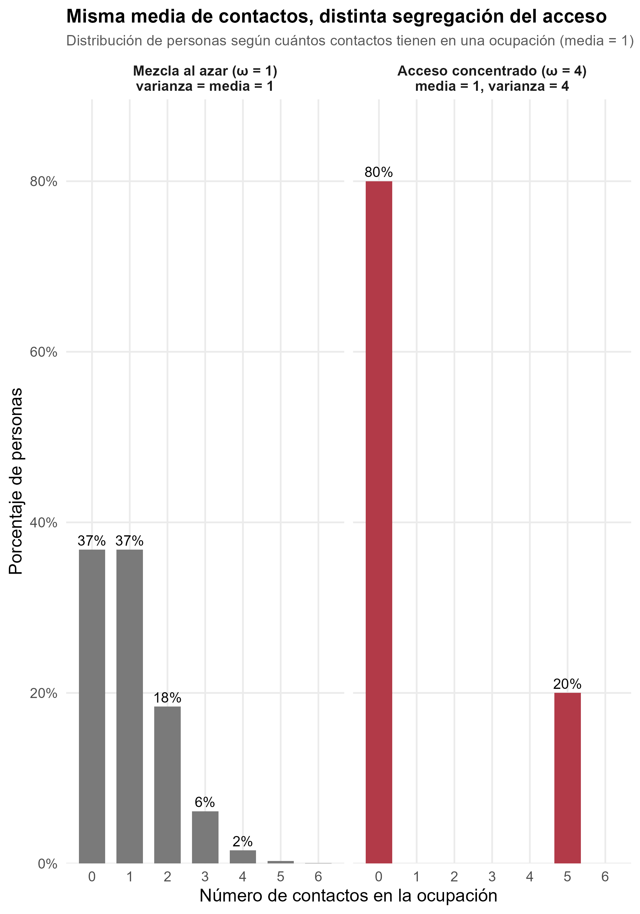
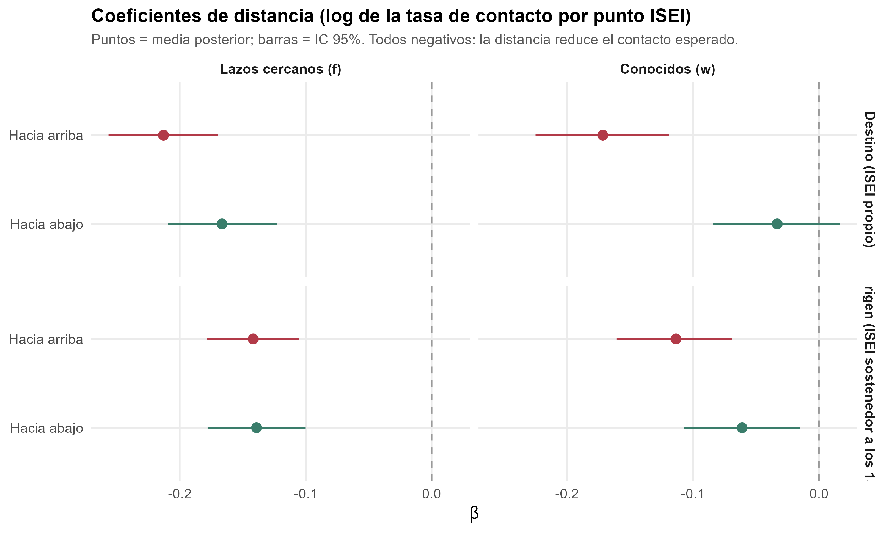
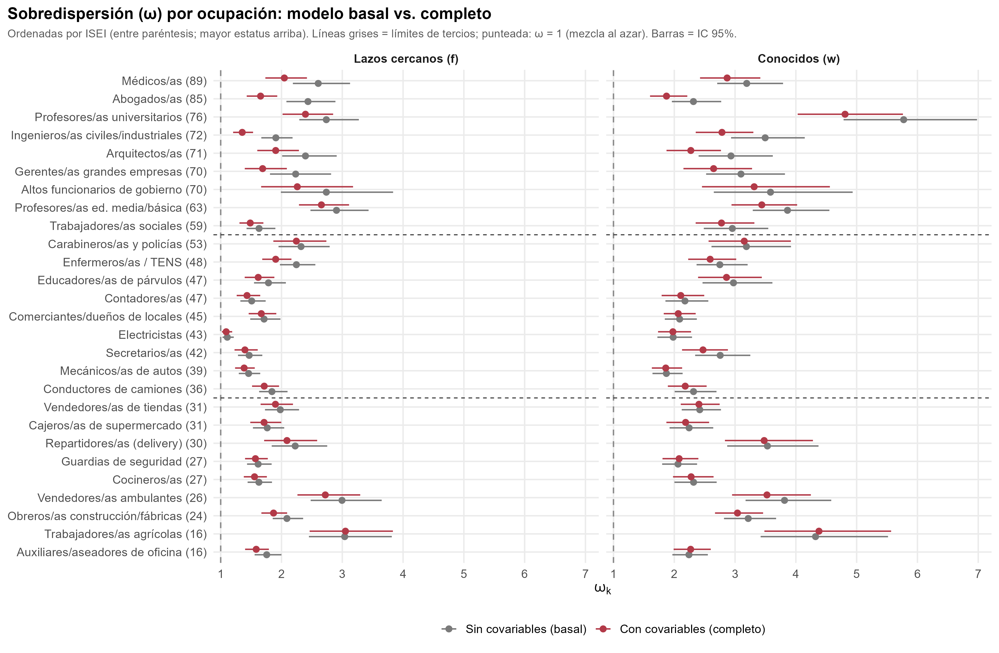
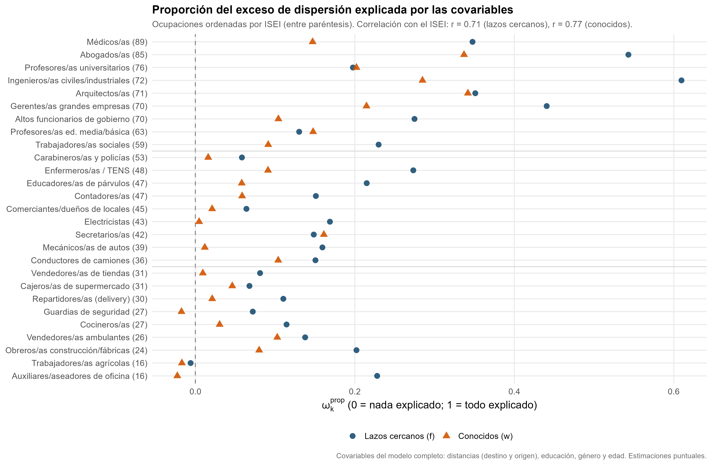

Fuentes intergeneracionales de la homogeneidad y la segregación ocupacional en redes de contacto
Informe de avance de Tesis (SOL3080)
ignacio.zavala@uc.cl · GitHub
Profesor guía: Mauricio Bucca · Co-tutor: Gabriel Otero
Comisión: Mauricio Bucca, Andrea Canales, Tania Hutt
Punto de partida: lo que el modelo anterior no podía responder
En la propuesta mostré que la distancia al destino y al origen predice la composición ocupacional de la red, con un gradiente más pronunciado para el destino. Ese modelo (binomial negativa multinivel, Espinosa-Rada et al. (2026)) permite saber cuántos contactos se reportan según la distancia.
Dos preguntas quedaban abiertas:
¿Qué ocupaciones están más segregadas en su acceso? Aun si hay homogeneidad en las redes, no sabemos si algunas ocupaciones concentran sus contactos en pocos círculos más que otras.
¿Cuánto de esa segregación se asocia con la similitud socioeconómica, y en qué ocupaciones pesa más el destino o el origen?
Redes personales, acceso a recursos y reproducción de la desigualdad
- Los lazos con distintas ocupaciones dan acceso a recursos beneficiosos (información, oportunidades laborales, apoyo) y a la integración en la sociedad (Burt, 2010; Granovetter, 2010; Lin, 2001). Por eso, medir la segregación en el acceso a ocupaciones muestra qué grupos están más aislados y clausurados entre sí (DiPrete et al., 2011).
- Esa clausura puede traducirse en reproducción social que perpetúa la desigualdad, dada la co-constitución de las redes personales con los logros ocupacionales de las personas (Bourdieu, 1986; DiMaggio & Garip, 2012; Lin, 1999).
El caso chileno combina alta desigualdad, baja movilidad intergeneracional, cierre de la clase alta y segregación residencial y educacional (Otero et al., 2021, 2022; Torche, 2014): un contexto donde las oportunidades de contacto entre clases están estructuralmente restringidas.
Pregunta y objetivos
Pregunta. ¿Cómo se asocian la posición de origen y de destino con la homogeneidad y la segregación ocupacional de las redes de contacto en Santiago? ¿Cómo cambia esta relación entre vínculos cercanos y conocidos?
Objetivo general. Analizar cómo la posición de origen y de destino se asocia con la homogeneidad y la segregación ocupacional de las redes de contacto en Santiago.
- Examinar cómo la similitud ocupacional con el destino y con el origen configura las redes de contacto.
- Evaluar cuánto de la segregación de cada ocupación es explicada por esa similitud, frente a otras características individuales (educación, género, edad).
- Ver cómo cambian a y b según la cercanía del vínculo: amigos cercanos y familiares vs. conocidos.
Homogeneidad y segregación
| Concepto | Qué significa |
|---|---|
| Homogeneidad | Los contactos de una persona tienden a parecerse a ella en estatus ocupacional. Resulta de la estructura de oportunidades (homofilia de base) y de la selección de similares (inbreeding) (Blau & Schwartz, 2018; McPherson et al., 2001) |
| Segregación | El acceso a una ocupación está concentrado en pocos egos o círculos, más allá del tamaño de la red y de la ocupación (DiPrete et al., 2011; Van Tubergen & Volker, 2015) |
Que una ocupación esté segregada quiere decir que sus contactos no se reparten parejo entre las personas: se concentran en algunas y otras no tienen ninguno. Si las ocupaciones son canales de información, apoyo e influencia, la segregación es una forma de desigualdad en a quién se puede llegar, más allá de qué posición se ocupa.
Relación. La homogeneidad es un patrón de a quién se conoce; la segregación es el resultado agregado sobre quién accede a una ocupación. La homogeneidad es el mecanismo propuesto para explicar la segregación.
Foco intergeneracional. Medir la homofilia respecto del origen y del destino indica cuánto se asemejan los contactos de una persona a su origen social, neto de su posición actual, y viceversa (Feld, 1981; Newman, 2008).
Preguntas analíticas (hipótesis en construcción)
1. Niveles de análisis. ¿Las personas son más homogéneas respecto de su posición de destino (logros actuales) que de su origen?
2. Dirección de la homogeneidad. ¿Reportan más contactos con ocupaciones de menor o de mayor estatus que el propio, desde el destino y desde el origen?
3. Contribución a la segregación. ¿Cuánto contribuye la homogeneidad de los contactos a la segregación de las ocupaciones? ¿Dónde pesa más: en ocupaciones altas, bajas o ambas? ¿Es igual en lazos cercanos y en conocidos? ¿Contribuye más el origen o el destino?
Datos e instrumento
SSCNPA 2025
- Región Metropolitana, 41 comunas
- Muestreo probabilístico multietápico estratificado
- N = 1.124 egos, 30.348 díadas ego-ocupación
Generador de Posición (Lin & Dumin, 1986)
- 27 ocupaciones, puntaje ISEI-08 (Ganzeboom et al., 1992)
- “¿Cuántas personas conoce que trabajen como…?”
- “De ellas, ¿cuántas son amigos cercanos o familiares?”
\[y_{ik} = c_{ik} = w_{ik} + f_{ik}\]
\(f_{ik}\): lazos cercanos (amigos cercanos o familiares) · \(w_{ik}\): conocidos (ni amigos cercanos ni familiares)
Los datos tienen la forma de datos relacionales agregados (ARD): conteos de cuántas personas conoce el ego \(i\) en cada subgrupo \(k\) (aquí, ocupaciones), no los lazos uno a uno. Adoptamos este enfoque.
Enfoque ARD: de los conteos a la segregación
Los modelos ARD se desarrollaron para estimar el tamaño de poblaciones ocultas o de difícil acceso (Killworth et al., 1998; Zheng et al., 2006). La misma familia de modelos permite estimar el nivel de segregación de grupos específicos de la población, como ciertas ocupaciones (DiPrete et al., 2011; Zheng et al., 2006; gelman2021?).
Modelan cómo se distribuyen los contactos de una persona \(i\) en un subgrupo \(k\) según tres fuentes de variación:
- Tamaño demográfico de cada grupo.
- Sociabilidad de las personas: unas conocen a más gente que otras.
- Características sociodemográficas que dan más acceso a ciertos grupos que a otros.
De ahí se deriva una distribución de los contactos,
\[y_{ik} \sim \text{NegBin}\big(\text{media}=\mu_{ik},\ \text{sobredispersión}=\omega_k\big)\]
y el parámetro de sobredispersión \(\omega_k\) se interpreta en la literatura como el nivel de segregación del grupo \(k\) (Zheng et al., 2006; gelman2021?).
¿Cómo calculan los ARD la segregación de una ocupación?
- Si todos tuvieran la misma propensión a conocer gente de la ocupación \(k\) (mezcla al azar), los conteos se distribuirían como una Poisson: varianza = media, \(\omega_k = 1\).
- Si la propensión varía entre personas (algunas están dentro de los círculos de esa ocupación y otras no), los conteos se concentran: muchos ceros y pocas personas con varios contactos. Integrando esa heterogeneidad se obtiene la binomial negativa, con varianza = \(\omega_k\) × media (Zheng et al., 2006).
- \(\omega_k\) mide cuánto se concentra el acceso a \(k\), una vez descontados el tamaño de red de cada ego y el tamaño de la ocupación. No hay un umbral para llamarla “alta”: se interpreta comparativamente y respecto de 1 (Baum, 2025).

El Covariate Model de Baum (2025)
Los ARD clásicos permiten estimar cuán segregado es el acceso a una ocupación, pero no por qué: \(\omega_k\) resume toda la heterogeneidad sin explicarla. El Covariate Model (Baum, 2025) agrega covariables observadas de los egos y parte la propensión a conocer el grupo \(k\) en dos componentes:
- una parte explicada por las covariables, y
- un residuo, cuya sobredispersión es \(\omega'_k\).
Ventajas frente a la tradición ARD
- Estima cuán segregada es cada ocupación (\(\omega_k\)) y cuánto de esa segregación explica un conjunto de covariables (\(\omega^{prop}_k\)).
- Permite aislar el aporte único de una variable o de un bloque de variables (\(\Delta\omega^{prop}_k\)).
- Es un modelo anidado: compara directamente el modelo sin covariables con el modelo completo.
Es de reciente desarrollo y aún no se ha aplicado a la composición socioeconómica de las redes por origen y destino. Nuestra extensión incluye covariables de la díada ego-ocupación (la distancia), lo que Baum consideró una ampliación natural del modelo.
Variables y parámetros: homogeneidad
La homogeneidad se mide con una distancia en la escala ISEI entre el ego y cada ocupación (\(\text{ISEI}_k\)), calculada desde dos posiciones del ego (Espinosa-Rada et al., 2026):
- Destino: el ISEI propio, a partir de su ocupación actual (ISCO-08).
- Origen: el ISEI de la ocupación del sostenedor del hogar cuando el ego tenía 15 años, usado habitualmente para estudiar orígenes sociales y movilidad.
Cada distancia se parte en dos tramos: hacia arriba y hacia abajo \[D^{+}_{ik}=\max(0,\ \text{ISEI}_k-\text{ISEI}_i)\] \[D^{-}_{ik}=\max(0,\ \text{ISEI}_i-\text{ISEI}_k)\].
Por qué. Permite saber si la similitud se traduce en más contactos con ocupaciones de mayor o de menor estatus que el propio: a igual número de puntos ISEI de distancia, ¿se conoce a más gente por encima o por debajo? Con los cuatro tramos (destino y origen, arriba y abajo) el modelo estima la probabilidad de contacto en cada dirección, neta del otro polo.
| Ego: ingeniero (72) · sostenedor: obrero (24) | Destino (arriba / abajo) | Origen (arriba / abajo) |
|---|---|---|
| Médico (ISEI 89) | 17 / 0 | 65 / 0 |
| Guardia (ISEI 27) | 0 / 45 | 3 / 0 |
Variables y parámetros: segregación
La segregación no es una variable observada sino un parámetro del modelo, derivado de la distribución de los conteos \(y_{ik}\) (la variable observada).
\[\omega_k \text{ y } \omega'_k\]. Sobredispersión de la ocupación \(k\) sin covariables (\(\omega_k\), modelo basal: segregación total) y con covariables (\(\omega'_k\): la que queda sin explicar). Nos dicen cuán segregada es cada ocupación y qué tan lejos está de \(1\).
\[\omega^{prop}_k = \dfrac{\omega_k-\omega'_k}{\omega_k-1}\] Proporción del exceso de dispersión que explica nuestro conjunto de covariables (distancias, educación, género y edad). Va de 0 (no explican nada) a 1 (lo explican todo), como un \(R^2\) (Baum, 2025; McCormick et al., 2010). Indica cuánto contribuyen las covariables a la segregación de esa ocupación
\[\Delta\omega^{prop}_k\] Diferencia de \(\omega^{prop}_k\) entre el modelo completo y uno sin un bloque de variables: el aporte único de ese bloque a la segregación de \(k\) (aquí, la distancia al destino y la distancia al origen, cada una con sus dos tramos). Se lee como \(R^2\) incremental y los aportes no tienen por qué sumar (Baum, 2025).
Estrategia analítica: el modelo y sus parámetros
\[y_{ik} \sim \text{NegBin}(\mu_{ik},\ \omega'_k)\]
\[\log \mu_{ik} = \alpha_i + \log m_k + \pi_k + \sum_{l} \delta_{lk} X_{li} + \beta^{dest}_{up} D^{+}_{dest,ik} + \beta^{dest}_{down} D^{-}_{dest,ik} + \beta^{orig}_{up} D^{+}_{orig,ik} + \beta^{orig}_{down} D^{-}_{orig,ik}\]
| Parámetro | Qué representa |
|---|---|
| \(\alpha_i\) | Sociabilidad del ego \(i\) (su tamaño de red en escala log): afecta por igual a todas las ocupaciones |
| \(\log m_k\) | Tamaño poblacional de la ocupación \(k\) (CASEN, RM), fijo: los contactos esperados si las redes se formaran al azar |
| \(\pi_k\) | Desviación de la ocupación \(k\) respecto de la mezcla proporcional al tamaño (\(\log(b_k/m_k)\)): su presencia en las redes más allá de su tamaño |
| \(\delta_{lk}X_{li}\) | Efecto de la covariable \(l\) del ego (educación, género, edad) sobre sus contactos con la ocupación \(k\) (varía por ocupación) |
| \(\beta^{dest}, \beta^{orig}\) | Cambio en el log de contactos por punto ISEI hacia arriba o hacia abajo del destino y del origen (comunes a las 27 ocupaciones) |
| \(\omega'_k\) | Sobredispersión residual: segregación de \(k\) que las covariables no explican |
Modelos estimados y estimación bayesiana
Para lazos cercanos (\(f_{ik}\)) y conocidos (\(w_{ik}\)), por separado:
- Modelo basal (Barrier Effects): sin covariables, solo \(\alpha_i + \log m_k + \pi_k\) → \(\omega_k\).
- Modelo completo: basal + educación, género, edad + las cuatro distancias → \(\beta\) y \(\omega'_k\).
- Sin distancia al destino y sin distancia al origen (cada una con sus dos tramos) → \(\Delta\omega^{prop}_k\) de cada fuente.
- Pendiente: sin las distancias (solo covariables sociodemográficas) y sin las sociodemográficas.
Note
Estimación. Los modelos se estiman con inferencia bayesiana mediante simulación MCMC (Stan (Carpenter et al., 2017), 4 cadenas, 2000 iteraciones). En vez de un único valor por parámetro, se obtienen miles de versiones plausibles de todos los parámetros a la vez, compatibles con los datos y con distribuciones previas débiles. Cada cantidad derivada (\(\omega^{prop}_k\), \(\Delta\omega^{prop}_k\), caídas porcentuales) se calcula en cada versión.
Resultados (muy) preliminares 1: ¿cuánto cae el contacto con la distancia?

Los 8 coeficientes de distancia son negativos: cuanto más lejos del estatus propio (o del de origen), menos contactos se reportan. No obstante, a igual distancia, entre conocidos, desde el destino, subir en estatus reduce el contacto mucho más que bajar. Entre cercanos la caída es casi simétrica, y desde el origen no hay evidencia de asimetría.
Resultados (muy) preliminares 2: segregación de las ocupaciones

Resultados (muy) preliminares 2: segregación de las ocupaciones
Promedio de \(\omega_k\) por tercio de estatus de la ocupación (9 ocupaciones por tercio), sin covariables (basal) y con covariables (completo), y proporción del exceso de dispersión que explican las covariables (\(\omega^{prop}_k\)).
| Tercio de estatus de la ocupación (ISEI) | Cercanos: \(\omega_k\) basal | Cercanos: \(\omega'_k\) completo | Cercanos: \(\omega^{prop}_k\) | Conocidos: \(\omega_k\) basal | Conocidos: \(\omega'_k\) completo | Conocidos: \(\omega^{prop}_k\) |
|---|---|---|---|---|---|---|
| Alto (59-89) | 2,40 | 1,94 | 0,35 | 3,47 | 2,98 | 0,21 |
| Medio (36-53) | 1,72 | 1,61 | 0,15 | 2,46 | 2,36 | 0,06 |
| Bajo (16-31) | 2,12 | 2,01 | 0,11 | 2,91 | 2,85 | 0,03 |
En ambos tipos de lazo, el tercio medio es el menos segregado y los extremos tienen niveles mayores de sobredispersión. Las covariables reducen \(\omega_k\) sobre todo en el tercio alto, y casi nada en el bajo.
Resultados (muy) preliminares 3: ¿cuánto explican las covariables?

Resultados (muy) preliminares 4: ¿destino u origen?
En lazos cercanos, la distancia al destino aporta más que la del origen a la segregación: \(\Delta\omega^{prop}\) medio de 0,034 (destino) vs. 0,018 (origen). En conocidos, los aportes son pequeños y ninguno domina (0,004 vs. 0,006).
| Tercio de estatus de la ocupación (ISEI) | Destino (cercanos) | Origen (cercanos) | Destino (conocidos) | Origen (conocidos) |
|---|---|---|---|---|
| Alto (59-89) | 0,050 | 0,023 | 0,012 | 0,006 |
| Medio (36-53) | 0,029 | 0,010 | 0,001 | 0,004 |
| Bajo (16-31) | 0,022 | 0,022 | -0,002 | 0,007 |
Caso: Abogados/as en lazos cercanos, \(\Delta\) destino = 0,194 vs. \(\Delta\) origen = 0,008. Falta estimar el modelo sin distancias para ver cuánto aporta la distancia en conjunto frente a las covariables sociodemográficas.
Discusión preliminar: posibles mecanismos
En los conocidos, el contacto cae sobre todo al subir en estatus y casi no al bajar: la frontera opera hacia arriba, justo donde un vínculo débil podría dar acceso a recursos no redundantes. En los cercanos, la distancia penaliza hacia ambos lados: la intimidad se organiza dentro de una misma franja de estatus, y el origen sigue pesando aun descontada la posición actual (Blau, 1977; Newman, 2008).
Una posibilidad es que muchos de esos vínculos surjan en contextos de interacción de servicio y de la vida cotidiana que organiza la posición actual (Feld, 1981); en cambio, llegar a ocupaciones de mayor estatus exige compartir contextos que la jerarquía restringe. Entre cercanos, la selección de similares que requiere sostener un vínculo íntimo (Kretschmer et al., 2025; Leszczensky & Pink, 2015; Windzio & Bicer, 2013) operaría en ambas direcciones.
Los extremos aparecen más segregados que las ocupaciones intermedias, que podrían actuar como puentes relacionales (Alecu et al., 2022; Blau & Schwartz, 2018; Cepić & Tonković, 2020; Otero et al., 2026). Arriba, la similitud de estatus (+ variables sociodemográficas) explica una parte mayor de la segregación, consistente con procesos de cierre de las posiciones altas; abajo, la segregación estaría respondiendo a otros mecanismos no incluidos aún (geografía, contextos laborales,), lo que justifica ampliar las covariables.
Alcance y próximos pasos
Warning
Alcance. Diseño transversal: las asociaciones son consistentes con que la posición estructure la red y con que la red contribuya al logro.
- Modelos sin distancias y sin sociodemográficas; ampliar controles que han sido desarrollados en literatura de capital social y desigualdad de clase en redes, que podrían contribuir a explicar la segregación ocupacional en grupos bajos (zona geográfica, pareja, hijos, ingresos, etc… [Lin (2001); @])
- Contactos esperados por perfiles de origen y destino y por tercio de estatus
- Robustez: LOO-CV para comparar ajustes (Baum, 2025), tres grupos de estatus, y revisar diagnósticos de convergencia (Stan)
¡Muchas gracias!
Referencias
Apéndice
A1. De la mezcla aleatoria al Covariate Model
| Modelo | Supuesto que relaja | Qué agrega |
|---|---|---|
| Random Degree | Mezcla aleatoria; prevalencia igual al tamaño poblacional | Tamaño de red \(d_i = e^{\alpha_i}\) |
| Group Prevalence | La prevalencia puede diferir del tamaño poblacional | \(b_k\) estimado |
| Barrier Effects | Mezcla aleatoria | \(\omega_k\): propensión heterogénea por grupo (McCormick et al., 2010; Zheng et al., 2006) |
| Covariate Model | Propensión sin explicar | Parte explicada por covariables + residuo \(\omega'_k\) (Baum, 2025) |
A2. Bayes y MCMC en simple
- Previa (valores plausibles antes de ver los datos) + verosimilitud (los datos) → posterior (creencia actualizada)
- La posterior de un modelo con miles de parámetros no tiene fórmula cerrada: MCMC genera muestras de ella (aquí, 4 cadenas)
- Previas débilmente informativas: \(\alpha_i \sim N(\mu_\alpha, \sigma_\alpha)\) con \(\mu_\alpha \sim N(0,5)\) y \(\sigma_\alpha \sim N^{+}(0,2)\); \(\pi_k \sim N(0,2)\); \(\delta_{lk} \sim N(0,\tau)\); \(\beta \sim N(0,1)\); \(\omega_k - 1 \sim \text{Gamma}(2, 0.5)\)
- Por qué no máxima verosimilitud: un \(\alpha_i\) por ego, con ~75% de ceros, es inestable; \(\omega^{prop}\) y \(\Delta\omega^{prop}\) son cocientes y diferencias de parámetros, que salen directo de la posterior con su intervalo; \(\omega_k\) tiene una frontera en 1
- Intervalo de credibilidad 95%: probabilidad posterior de 95% de que el parámetro esté en ese rango
- Diagnósticos: Rhat, tamaño efectivo, divergencias, chequeo predictivo posterior (Carpenter et al., 2017)
A3. Tamaño poblacional, \(\pi_k\) y el manuscrito
- En el manuscrito se usaron efectos fijos por ocupación en vez de un offset poblacional, para no imponer que la prevalencia en la red sea proporcional al tamaño de la ocupación (DiPrete et al., 2011; Zheng et al., 2006).
- En el modelo de Baum, \(\log m_k\) (CASEN) entra como ancla y \(\pi_k = \log(b_k/m_k)\) se estima con una previa centrada en 0: no impone proporcionalidad, la deja abierta a los datos.
- Costo ya asumido en el manuscrito: no separa homofilia de base de inbreeding (McPherson et al., 2001).
A4. Segregación por ocupación (completo)
TABLA/FIGURA: \(\omega_k\), \(\omega^{prop}_k\) y \(\Delta\omega^{prop}_k\) de las 27 ocupaciones, cercanos y conocidos (de tabla_omega_prop_distancia_largo.csv y tabla_delta_omega_prop_distancia.csv)
A5. Convergencia y robustez
POR AGREGAR: Rhat, divergencias, chequeo predictivo posterior (proporción de ceros y varianza), LOO-CV vs. modelo de delta libre por ocupación (script 0928)